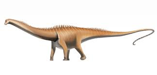

Lambeosaurus ("lagarto de Lambe") es un género con 2 especies válidas y posiblemente otra más dudosa conocidas de dinosaurios ornitisquios hadrosáuridos, que vivieron a finales del período Cretácico, hace aproximadamente 76 y 75 millones de años, en el Campaniense, en lo que hoy es Norteamérica. Este herbívoro que caminaba en posición cuadrúpeda, pero que podía erguirse en sus dos patas traseras es conocido por su cresta distintiva, en forma de hacha, cresta hueca. Varias especies posibles han sido nombradas a partir de restos de Alberta, Canadá, Montana, EE. UU., y Baja California, México, pero solamente las dos canadienses se reconocen como válidas. Lambeosaurus fue tardíamente descrito en 1923 por William Parks, más de veinte años después de que el primer material fuera estudiado por Lawrence Lambe. El género ha tenido una complicada historia taxonómica, en parte por los pequeños dinosaurios con crestas hoy reconocidos como juveniles, pero que en su época se le dio su propio género o especie. Actualmente, varios cráneos asignados a la especie tipo Lambeosaurus lambei se ven como ejemplos de diferencias de desarrollo y dimorfismo sexual. Lambeosaurus estaba estrechamente vinculado al más conocido Corythosaurus, que se encuentra en rocas levemente más antiguas, así como los géneros menos conocidos Hypacrosaurus y Olorotitan. Todos tenían crestas inusuales, que ahora se asumen generalmente para tener funciones sociales como exhibición y reconocimiento.El Lambeosaurus mejor conocido, L. lambei, era muy similar al más famoso Corythosaurus en todo menos en la forma del adorno principal de la cabeza. Comparado a Corythosaurus, la cresta de Lambeosaurus estaba más hacia adelante formada por una porción cuadrada mayor apuntando hacia adelante, y una pequeña espina hacia atrás, y los pasos nasales huecos dentro estaban en el frente de la cresta y apilados verticalmente.1 Se supone que los diferentes tamaños y formas de este órgano dependían de la edad y el sexo, con los más jóvenes careciendo de él. Su cavidad nasal se extendía por dentro de esta cresta mayormente hueca. Se cree que esto pudo haber mejorado el sentido del olfato, o creado un fuerte balido. También puede ser distinguido de Corythosaurus por la falta del proceso nasal bifurcado formando parte de los lados de la cresta, que es la única manera de diferenciar a los jóvenes de los dos géneros, las crestas adquirieron sus formas distintivas mientras que los animales envejecieron.2 Representación de un Lambeosaurus lambei agachado. En conformación, Lambeosaurus es similar a cualquier otro hadrosáurido, pudiéndose mover en dos o en cuatro patas, como lo muestran pisadas de animales relacionados. La cola estaba sostenida por tendones osificados que la mantenían rígida y prevenían que tocara el suelo. Las manos tenían cuatro dedos, faltándole el pulgar de la mano de básica de un tetrápodo, con el segundo tercer y cuarto dedo formando un casco, lo que sugiere que soportaba el peso del cuerpo cuando marchaba. El quinto dedo estaba libre para poder manipular objetos. Cada pie tenía solamente los tres dedos centrales.3 La característica más distintiva, la cresta, era diferente en las dos especies mejor conocidas. En L. lambei, tenía forma de hacha cuando el animal estaba completamente crecido, siendo más corta y redondeada en ejemplares considerados hembras.1 La "hoja del hacha" se proyectaba hacia el frente entre los ojos, y el "mango" era un hueso sólido que salía hacia atrás en la nuca. La "hoja del hacha" tenía dos secciones, la porción superior tenía un hueso delgado, posiblemente sostén de una cresta carnosa que crecería en al llegar a su edad adulta y la porción inferior de la cresta estaba surcada por canales para el aire, continuación de los conductos nasales.1 En L. magnicristatus, el "mango" estaba muy reducido, y la "hoja" expandida,4 formando una pomposa cresta tipo Pompadour. Esta cresta esta dañada en los mejores especímenes, y solamente se conoce la mitad delantera.5 En la especie menos conocida L. paucidens actualmente la cresta no se conoce. La especie canadiense de Lambeosaurus parece tener un tamaño similar al de Corythosaurus, alrededor de 9,5 metros de largo.6 Impresiones de escamas son conocidas en varios especímenes, los cuales son ahora asignados a L. lambei tenía una piel fina y uniforme, con escamas poligonales con una distribución en ninguna sin un orden particular en el cuello, torso, y cola.7 Un intercalado similar se ve en impresiones asignadas al cuello, brazo y pie en L. magnicristatus.5 Por medio de sus huellas se ha descubierto que presentaban un comportamiento gregario. Se trataba de animales rápidos, lo que era probablemente su única defensa contra los carnívoros, junto con su gran tamaño.
 triceratops  apatosaurus  | diplodocus  inicio  tiranosaurus  velociraptor |